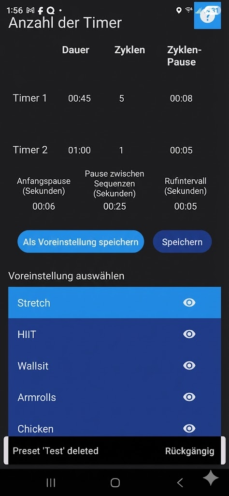

Audio Timer Anleitung
Dein sprachgesteuerter Intervall- & Workout-Timer
1. Erstelle dein Workout
- Tippe auf das Zahnradsymbol → Einrichtungsbildschirm
- Wähle die Anzahl der Timer (1–10)
- Du kannst den Timer-Spinner nach oben oder unten ziehen, wenn die gewünschte Zahl nicht auf dem Bildschirm ist
- Stelle für jeden Timer Dauer, Wiederholungen und optional die Pause zwischen Wiederholungen ein

2. Globale Einstellungen
- Anfängliche Pause – Countdown bevor der erste Timer startet
- Pause zwischen Sequenzen – Ruhepause nach einem vollen Zyklus
- Ansageintervall – Stimme sagt die verbleibende Zeit alle X Sekunden an

3. Speichere deine Voreinstellung
- Tippe auf „Als Voreinstellung speichern“
- Gib einen Namen ein (z. B. „Tabata“, „EMOM 60“, „HIIT 30/10“)
- Sie erscheint sofort in der Liste der Voreinstellungen

4. Starte deinen Timer
- Gehe zurück → tippe auf den großen Start-Button
- Die Stimme führt dich durch die gesamte Zeit
- Du hast Wiederholen- und Weiter-Buttons für Unterbrechungen
- Du hast auch einen Pause-Button; während einer Pause kannst du auf den Countdown tippen, um eine neue Countdown-Zeit festzulegen

Profi-Tipp: Der Bildschirm bleibt an und das Audio funktioniert perfekt, auch wenn das Telefon gesperrt ist!
5. Verwalte deine Voreinstellungen
Tippe auf eine beliebige Voreinstellung in der Liste auf dem Hauptbildschirm, um sie sofort zu laden.
Voreinstellung löschen:
Wische eine Voreinstellung in der Liste nach links → sie wird gelöscht.
 Einen Fehler gemacht? Ein Hinweis mit einem „RÜCKGÄNGIG“-Button erscheint für einige Sekunden — tippe darauf, um die Voreinstellung sofort wiederherzustellen!
Einen Fehler gemacht? Ein Hinweis mit einem „RÜCKGÄNGIG“-Button erscheint für einige Sekunden — tippe darauf, um die Voreinstellung sofort wiederherzustellen!
Wische eine Voreinstellung in der Liste nach links → sie wird gelöscht.
Einen Fehler gemacht? Ein Hinweis mit einem „RÜCKGÄNGIG“-Button erscheint für einige Sekunden — tippe darauf, um die Voreinstellung sofort wiederherzustellen!
